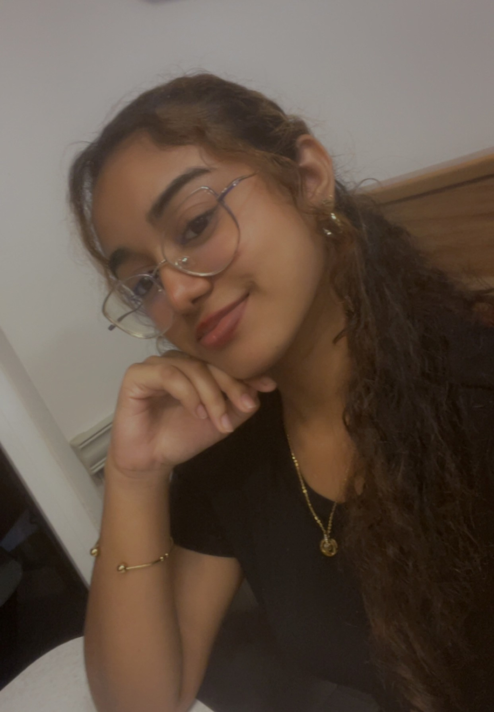

Welkom op mijn portfolio
Mijn naam is Anisha Patandin en ik ben student aan UNASAT-ICT.
Op deze website laat ik zien wie ik ben, welke vaardigheden ik ontwikkel en aan welke projecten ik heb gewerkt. Ik ben geïnteresseerd in websites bouwen, design en technologie. Stap voor stap leer ik hoe ik met HTML, CSS en JavaScript betere en professionelere websites kan maken.
